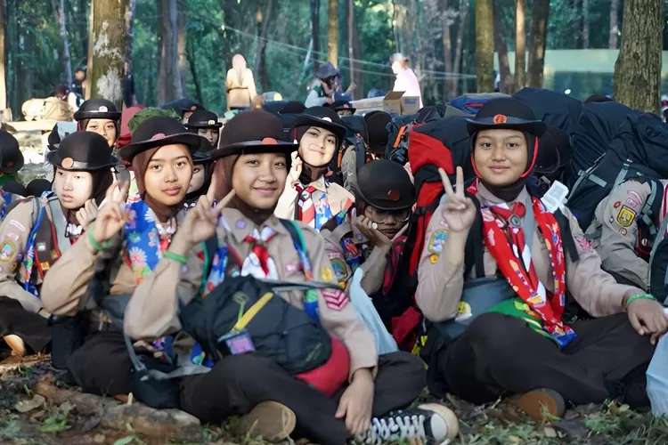
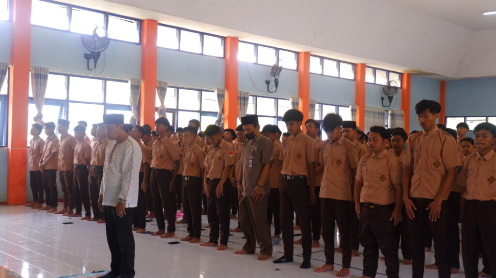

Kegiatan Kelas

Setiap hari Jumat setelah sholat jumat biasanya diadakan pramuka bagi seluruh kelas 10.Kegiatan pramuka in biasanya akan di pimpin oleh anggota dari organisasi Dewan Ambalan atau DA sampai kegiatan ini selesai.Kegiatan ini dimulai dari pukul 13:30 hingga pukul 16:00.

Foto di atas merupakan salah satu dokumentasi dari kegiatan Jumat Religius yang diadakan setiap hari Jumat pada pukul 07:00 hingga selesai yang di tempatkan di aula sekolah.Kegiatan Jumat Religi ini wajib diikuti oleh seluruh murid dengan sistem bergilir bagi setiap angkatan per minggunya.Kegiatan ini juga biasanya berisikan Sholat Dhuha,lalu membaca Surat Yasin dan Tahlil,lalu pembacaan tausiah dari beberapa murid yanag telah di pilih oeh pihak sekolah dan tausiah dari salah satu guru.